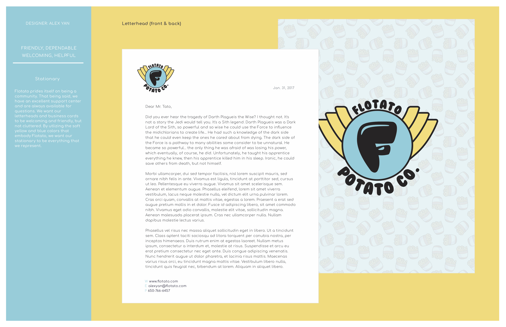
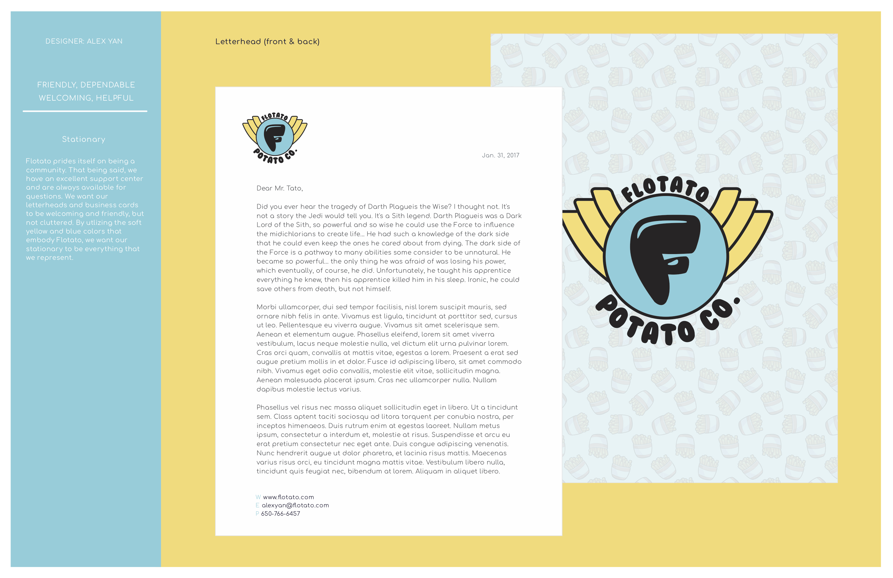

RESUME
RESUME

aspiring entrepreneur
web and graphic designer
EDUCATION
Senior
(2015 - Present)
Nueva is a student-centered school known for its distinctive inquiry-based interdisciplinary studies, constructivist project-based learning, and its pioneering work in social emotional learning and design thinking.
COURSES
- Advanced Speech and Debate (SPCH201)
- Modern Physics (PHYS250)
- Environmental Economics (ECON210)
- Applied Statistics and Probability (MATH540)
- Multivariable Calculus (MATH520)
- Advanced Programming Workshop (CS301)
- Graphic Design (FA280)
SKILLS
- Adobe Photoshop
- Adobe Illustrator
- Microsoft Suite
Word, Powerpoint, Excel
- Web Design
HTML, CSS, Javascript, jQuery
- Ableton Live 10
- Public Speaking
LANGUAGES
English
Native Language
Chinese (Mandarin)
Native Language
Spanish
Proficient
SPORTS
Nueva Varsity Tennis
(2015 - Present)
Captain Senior Year
Co-Captain Junior Year
CLUBS
Speech and Debate
Organized and particpated in argument brainstorms, public forum debate rounds, and impromptu speaking events.
Spirit and Social
Helped plan and organize school events, such as dances and drives.
QUEST
Quest is a schoolwide program at Nueva that allows students to pursue and showcase their interests throughout four years of highschool.
By working with advisors and mentors, I crafted a personal in-depth exploration of various self-selected areas of evolving passion.
Click the to see images.
to see images.
By working with advisors and mentors, I crafted a personal in-depth exploration of various self-selected areas of evolving passion.
Click the
to see images. 9th
Pancake Printer
Built and modified a 3-D carving machine to hold pancake mix. Worked with peers and mentors to configure a carving program to allow for user-drawn pancake images.
10th
"Persuasian" Food Stand
Worked with a classmate to create a Persian/Asian fusion cuisine featuring five-spice gyro wraps. Visited food truck/stand gatherings to learn about the business and sold our creation for profit.
11th
Bitcoin Exploration
Researched the history of cryptocurrency and expert opinions on the topic. Learned the foundations of trading and involved myself in the market over the course of 6 months.


 


close x
PROJECTS
flotato potato co.
graphic design
STYLE TILE
(Fall 2017)
Created an outline for a mock company with an emphasis on the creation, branding, and marketing of the logo. A style tile provides the client with various sketches and colorways of the logo, multiple typefaces, mock advertisements, example stationary, as well as business cards. Additionally, the style tile includes a description of the company, reasoning for the design choices, and how such decisions influence the target audience. Scroll through the slide show to learn more!
seeing things
photography
PHOTO SERIES
(2016-2017)
Crafted multiple photo albums with an evolving central theme; whether it be a technical or physical aspect. A few notable areas of focus include city life, leading lines, depth of field, and collage. This series of photographs is showcased on the photographer Mark Taylor's blog alongside other Nueva students. Scroll through the slideshow and click any photo series to be taken to its collection on seeingthings.club.


lung cancer report
microbiology
IMMUNO-ONCOLOGY
(Spring 2018)
Researched the background of lung cancer and provided information on its survival rate, prevalence, and etiology. Selected and reserached a specific immunotherapy, explaining its mechanism and my rationale for why I chose this means of treatment. This includes the advantages and disadvantages of the chosen immunotherapy over conventional therapy, as well as why it was well suited to treat lung cancer. Scroll through the slides to view the report in full and click the images to zoom in.
EXPERIENCE
EXPERIENCE
job experience
volunteer programs
internships and shadowing
WORK
ASSISTANT TENNIS COACH
Zalles Tennis
(2013-Present)
Job Responsability: Coached young athletes of ages 6 to 14 on various aspects of tennis, from simple strength building drills to granular shot accuracy training. Worked to develop the player's consistency on strokes, footwork, and technique.
Hours: Saturdays (8am-12pm).
Reference: Head Coach Raul Cossio (650) 888-0278
WEB DESIGN INSTRUCTOR
Local
(2017-Present)
Job Responsability: Worked with a handful of aspiring web-designers aged 10-12 to develop a proficient understanding of HTML, CSS, Javascript, and jQuery. Introduced basic graphic design concepts and helped students form a strong foundation.
Hours: Mondays, June-August. (7pm-9pm). Frequency Varies.
Reference: Peer Tutor Tom Shahar (650) 787-4681
TENNIS CAMP INSTRUCTOR
Zalles Tennis
(2015-Present)
Job Responsability: Coached young athletes of ages 8 to 15 on developing an all-aroung game, strategy, footwork, and toughness. Match strategies and fitness are incorporated into games and drills to ready players for USTA tournaments.
Hours: Weekdays, June-August. (9am-1pm). Frequency Varies.
Reference: Head Coach Raul Cossio (650) 888-0278
VOLUNTEER
THE LEATHERBACK TRUST
Animal Welfare
(2017)
Organization: The Leatherback Trust is dedicated to saving the leatherback sea turtle and promote sea turtle conservation.
Responsibility: Rescued and helped build nests for the endangered baby leatherback sea turtles in Costa Rica. Patrolled the shores of Playa Grande at night and moved turtle nests to a hatchery at the research station.
Hours: February-March
MONTEVERDE INSTITUTE
Environment
(2017)
Organization: The Monteverde Research Institute works advance sustainable living through “place-based” education, community engagement, and applied research.
Responsibility: Helped with reforestation in Costa Rica through calculations on CO2 intake, water quality, and biodiversity. Recorded my findings in the institute's database for future use.
Hours: March
SECOND HARVEST FOOD BANK
Social Services
(2017-2018)
Organization: The Second Harvest Food Bank of Santa Clara and San Mateo Counties provides fresh produce to families in need, serving more than a quarter million people each month.
Responsibility: Helped pack and sort produce for distribution in the San Mateo County
Hours: Tuesday Mornings, Monthly (9am-12pm)
INTERNSHIPS
CALIFORNIA STATE CAPITOL

Personal Assistant to Elle Chen Legislative Aide and Consultant on Public Safety to Senator Skinner
(2018)
Responsability: Spent a week at the Sacramento Capitol Building with Ms. Chen to learn about public policy and the structure of government at a state level. Assisted her with various tasks, such as recording important material from commitee hearings and editing legislative fact sheets with talking points. Aided with cross-office communications and office management.
Hours: June 25 - July 2nd
Reference: Elle Chen (650) 931-5589
<>